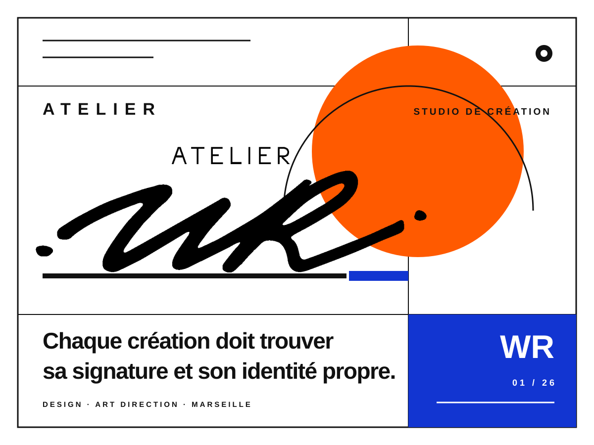

À Marseille, William Rigoulet développe une pratique créative globale, à la croisée du design, de la peinture, du dessin et de la photographie. Designer et directeur artistique, il envisage ces disciplines comme autant de façons d’observer, de composer et de donner une identité singulière à chaque projet.
Son parcours, notamment neuf années au studio de design horloger de Cartier dont cinq à sa direction, nourrit une approche où la précision du dessin, le sens de la matière et la vision d’ensemble se répondent.
Chaque projet débute par une lecture attentive de son contexte, de son histoire, de ses usages et de l’ADN de la marque. Le dessin devient ensuite un outil pour faire émerger des solutions justes, fonctionnelles et porteuses d’une identité forte.
La peinture, le dessin et la photographie entretiennent son regard et sa sensibilité aux couleurs, aux lumières et aux formes. Cette recherche personnelle nourrit les projets de design menés depuis Marseille pour des clients français et internationaux.
Conception d’objets, de mobilier et d’accessoires sur mesure, du brief créatif aux croquis, volumes et prototypes.
Création de montres, cadrans, boîtiers, bracelets et bijoux, avec développement de collections et suivi des prototypes.
Conception et pilotage d’univers créatifs cohérents pour les marques, campagnes, vitrines, contenus et lancements de collections.
Création de logos, identités visuelles, chartes graphiques et supports de communication imprimés ou numériques.
Développement esthétique et fonctionnel de produits manufacturés, de l’étude des usages au suivi de l’industrialisation.
Conception de packagings, coffrets, étuis et étiquettes de vin pour valoriser le produit et l’identité de marque.
Création d’illustrations sur mesure pour affiches, éditions, campagnes, presse, packaging et communication digitale.
Création de marque, direction artistique et conception des collections Ellipse, Emblème, Héritage et Pink Edition.
Voir l’étude de cas →
Ce que je peins pour moi : la mer, Marseille et la Méditerranée, et les carnets que je rapporte de voyage.
Mes derniers dessins à l'encre bleue. J'en publie plusieurs par semaine sur Instagram.
Suivre @wrigouletFondateur et directeur artistique. Clients réguliers : Almé Paris, L'Eau à la Bouche, Bonjour Brand.
Co-fondateur de la marque horlogère. Je dessine les montres et je tiens l'identité de la marque.
Designer collections accessoires : maroquinerie, chaussures, ceintures. Nouveau logo et refonte de l'identité.
Designer horlogerie, puis responsable du studio de design horloger (4 personnes) de 2013 à 2018. Des montres piliers jusqu'à la haute horlogerie.
Designer maroquinerie, responsable de la collection cuir.
Designer maroquinerie et accessoires en freelance : collections féminines, sacs, sneakers, éléments métalliques.
Design produit, packaging et identité de marque, puis design extérieur automobile.
Une montre à dessiner, une étiquette pour votre prochaine cuvée : un mail ou un appel suffit pour commencer.